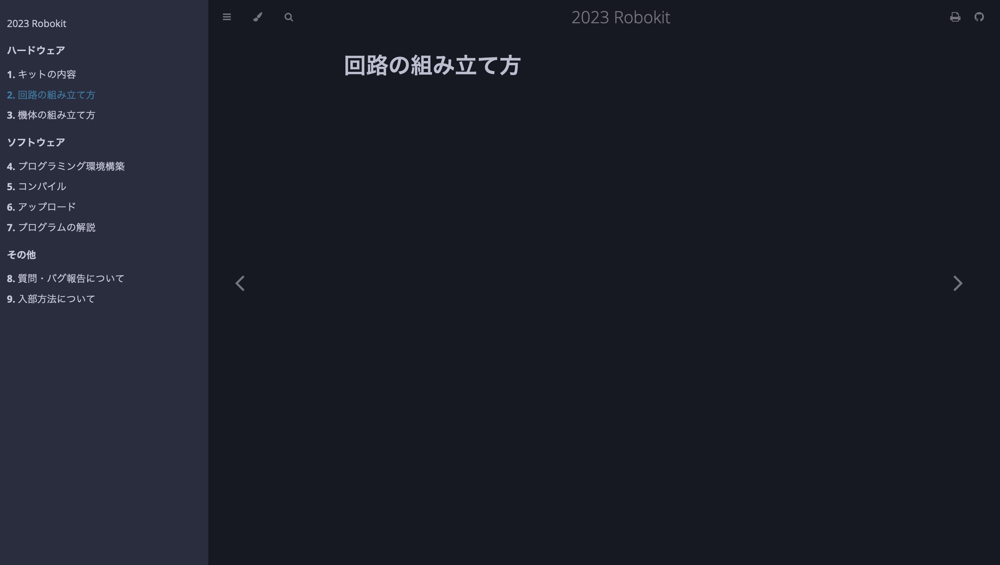
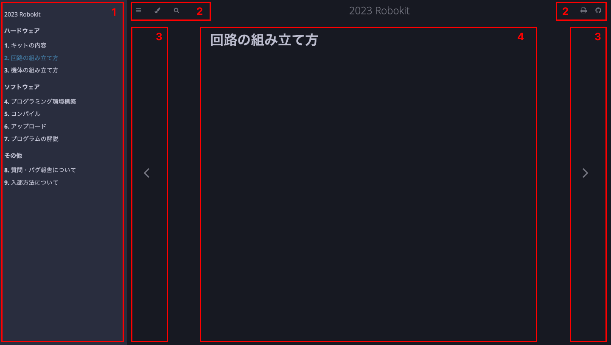
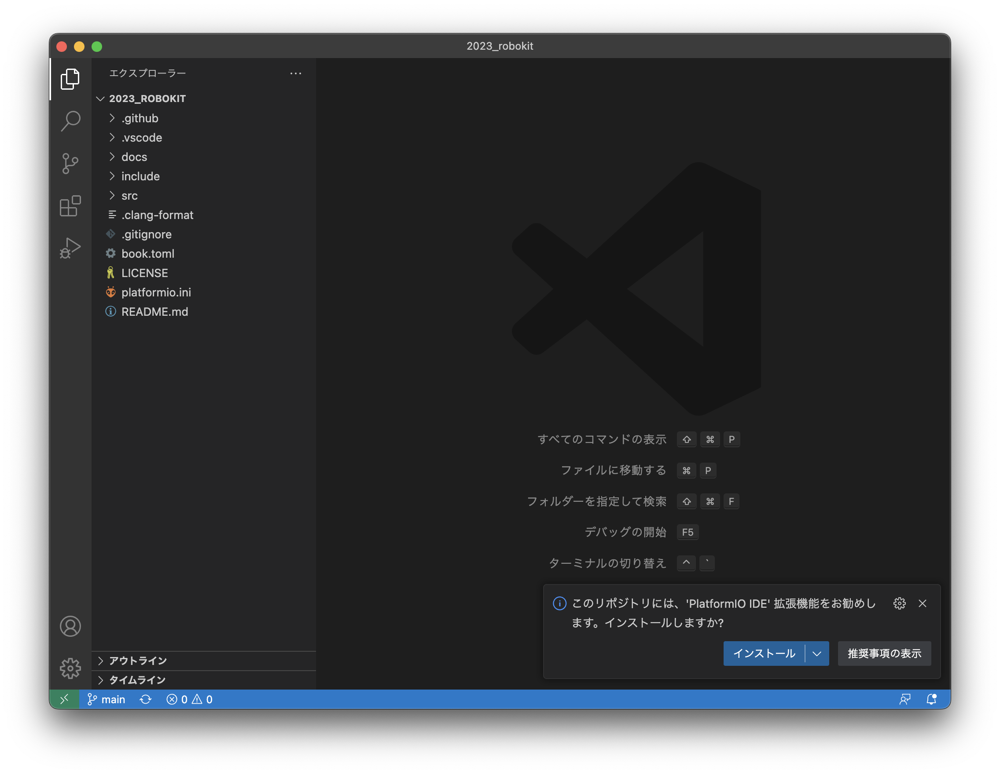

2023 Robokit
ロボキットへようこそ！このドキュメントは東京工業大学 ロボット技術研究会 アクア研の2023年新歓活動で配布したロボキットに関する説明をまとめたものです。ロボキット購入費の支払い方法、アクア研の連絡先、ロボット技術研究会への入部方法もこのドキュメントを参照してください。
ロボキット購入費の支払い方法
金額は3,000円です。支払いの方法は次の2通りあります。
- 対面での受け渡し時に直接支払う
- 銀行口座への振り込みで支払う
それぞれの具体的な方法は次の通りです。
1: 対面での受け渡し時に直接支払う
対面でロボキットを受け渡す際にお支払いください。
2: 銀行口座への振り込みで支払う
口座の情報は以下の通りです。
みずほ銀行 自由が丘支店 店番533 口座番号3064768 東工大ロボット技術研究会アクア研究
依頼人名は{新歓Discordの表示名} {ミョウジ} {ナマエ}のようにしてください。例えば、新歓Discordの表示名が23-Aquaで本名がアクア 太郎の場合は23-Aqua アクア タロウとなります。4/28(金)までにお支払いください。
連絡先等
ロボット技術研究会への連絡先は以下の通りです。
- Twitterアカウント: @titech_ssr
- メールアドレス: info@rogiken.org
アクア研への連絡先は以下の通りです。
- Twitterアカウント: @rogy_aqua
- メールアドレス: rogy.aqua@gmail.com
また、東京工業大学ロボット技術研究会2023年度新歓ページも参照してください。
ドキュメントの見方
以下のスクリーンショットはパソコンでこのドキュメントを開いた概観です。

画面を各部分に分解すると次のようになります。

それぞれの説明は以下の通りです。
- このドキュメントのページ一覧。現在見ているページは青色、それ以外は白色で表されています。
- ドキュメントのナビゲーションです。左のアイコンから順に、以下のことができます。
- ページ一覧とナビゲーションの表示/非表示を切り替える。
- テーマを変える。
- ドキュメント内で検索を行う。
- ドキュメント全体を印刷する。
- ドキュメントのソースコードが置かれているGitHubリポジトリを表示する。
- 左矢印で1つ前のページ、右矢印で1つ後のページに移動します。
- ページの本文です。
ドキュメントの見方に関するより詳細な解説はReading Books - mdBook Documentationを参照してください。
キットの内容物
TODO: キットの内容確認(写真と名前と数を一致させる)
回路の組み立て方
TODO: robokitの組み立て方(回路)
機体の組み立て方
TODO: robokitの組み立て方(機体)
TODO1: ドライブに写真を全部写す
プログラミング環境構築
ここではロボキットのプログラムを書き、そのプログラムでロボキットを動かすための環境構築を紹介します。概要は次の通りです。
ここではMac, Windowsでの環境構築について紹介します。環境構築でわからないところがある場合は質問・バグ報告についてを参照してください。
1: VSCodeをインストールする
VSCode(Visual Studio Code)とは、microsoftが無料で公開しているコードエディタです。プログラミングを行う際はこのエディタを使うことが多いです。
まずはインストールに必要なファイルをダウンロードします。次のURLを開いてください。
https://code.visualstudio.com/
VSCodeをインストールに適切なファイルをダウンロードするボタンがページの真ん中あたりに表示されています。Macの場合は以下のようなものです。

このようなボタンを押すとダウンロードが始まります。ダウンロード後の作業はOSごとに手順が違うので注意してください。
Windows
ダウンロードされたものはVSCodeのインストーラです。ファイルを開いて実行すると、VSCodeをインストールするためのウィンドウが開きます。
以降はウィンドウの指示に従って進めてください。オプションが何個かありますが、迷った場合/わからなかった場合はとりあえずチェックを入れておくのが吉です。
ダウンロード後のスクリーンショット付きの説明はVSCode | Visual Studio Codeのダウンロードとインストール #Visual Studio Codeをインストールするを参照してください。
Mac
ダウンロードされたものはVSCodeアプリのzipファイルです。展開するとVisual Studio Code.appという名前のファイルができます。このファイルを「アプリケーション」フォルダに移動させてから開いてください。
開く際に警告が出る可能性がありますが、構わず進めてください。
ダウンロード後のスクリーンショット付きの説明はMacOSでVisual Studio Codeをインストールする手順 - Qiita #3. ダウンロードしたファイルを開く（解凍する）を参照してください。
2: VSCodeを開く
インストールが完了したらVSCodeを起動します。最初に表示されるウィンドウは↓のようになっているはずです。

画面右下にある「インストールして再起動」のボタンを押してください。VSCodeが再起動後、日本語化されます。
3: プログラムを開く
まずはロボキットを動かすプログラムをダウンロードします。

↑のバッジを押すとzipファイルのダウンロードが始まります。展開して得られるフォルダの中にプログラムが入っています。(zipファイルは削除しても構いません。)
続いて、展開したフォルダをVSCodeで開きます。Windowsの方はウィンドウ左上のメニュー、Macの方は画面左上のメニューから ファイル>フォルダーを開く を選択してください。フォルダを選ぶためのウィンドウが出てくるので、先程zipファイルを展開して得たフォルダを選択して開いてください。
4: 必要な拡張機能をインストールする
フォルダをVSCodeで開くと、以下のようなウィンドウが表示されるはずです。

画面右下の「インストール」ボタンを押して、プログラムを実行するのに必要なVSCodeの拡張機能をインストールします。
VSCodeでは拡張機能と呼ばれるものをインストールしてVSCodeをより多機能にすることができます。ここでインストールしているのはPlatformIO IDEという拡張機能です。
インストール後、必要に応じてVSCodeの再起動などを行なってください。VSCodeのウィンドウ左側にのアイコンが表示されていれば環境構築は完了です。
参考
- VSCode | Visual Studio Codeのダウンロードとインストール
- MacOSでVisual Studio Codeをインストールする手順 - Qiita
- Setting up Visual Studio Code
- Running Visual Studio Code on Linux
- Running Visual Studio Code on macOS
- Running Visual Studio Code on Windows
- visual-studio-code — Homebrew Formulae
- PlatformIO IDE for VSCode — PlatformIO stable documentation #Installation
コンパイル
TODO: コンパイルとは何かとその方法説明
アップロード
TODO: コンパイルの成果物をボードに書き込む方法
プログラムの解説
TODO: ソースコード中のコメントへの誘導を書く。Doxygenの場合はVSCodeでの見え方もあるといいかも
質問・バグ報告について
TODO: issueの立て方を書く。discordサーバーへの招待リンクがあってもいいかも
入部方法について
TODO: 入部方法書く